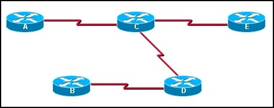
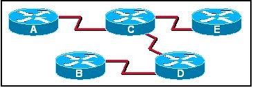
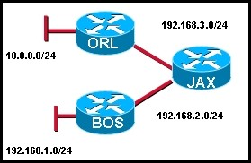

Chapter 10 – CCNA 2 – 97.4 %
01. Which algorithm is run by link-state routing protocols to calculate the shortest path to destination networks?
- DUAL;
- Dijkstra;
- Bellman-Ford;
- Diffie-Hellman;
02. When are link-state packets sent to neighbors?
- every 30 seconds;
- every 180 seconds;
- after the holddown time expires;
- when a link goes up or down;
- when a routing loop occurs;
03. Refer to the exhibit. If all routers and interfaces are configured to use a link-state routing protocol, from which routers will router D receive hello packets?
- A and E;
- B and C;
- A, B, C, and E;
- C only;
04. Which two routing protocols use Dijkstra’s shortest path first algorithm? (Choose two.)
- RIPv1;
- RIPv2;
- IS-IS;
- BGP;
- EIGRP;
- OSPF;
05.  Refer to the exhibit. What kind of information would be seen in an LSP sent from router JAX to router ATL?
Refer to the exhibit. What kind of information would be seen in an LSP sent from router JAX to router ATL?
- hop count;
- uptime of the route;
- cost of the link;
- a list of all the routing protocols in use;
06. Why is it difficult for routing loops to occur in networks that use link-state routing?
- Each router builds a simple view of the network based on hop count;
- Routers flood the network with LSAs to discover routing loops;
- Each router builds a complete and synchronized view of the network;
- Routers use hold-down timers to prevent routing loops;
07. What feature do modern link-state protocols provide to minimize processing and memory requirements?
- splitting routing topologies into smaller areas;
- assigning lower process priorities to route calculations;
- using update timers to restrict routing updates;
- strict split horizon rules to reduce routing table entries;
08. What action does a link-state router take immediately upon receipt of an LSP from a neighboring router?
- floods the LSP to neighbors;
- calculates the SPF algorithm;
- runs the Bellman-Ford algorithm;
- computes the best path to the destination network;
09. What two statements correctly describe the link state routing process? (Choose two.)
- all routers in the area have link state databases;
- each router in the area floods LSPs to all neighbors;
- LSPs use the reserved multicast address of 224.0.0.10 to reach neighbors;
- routing loops are prevented by running the Diffusing Update Algorithm (DUAL);
- Reliable Transport Protocol (RTP) is the protocol used by for the delivery and reception of LSPs;
10. Which database or table must be identical on all link-state routers within an area in order to construct an accurate SPF tree?
- routing table;
- adjacency table;
- link-state database;
- neighbor table;
- topology database;
11. A new network administrator is given the task of selecting an appropriate dynamic routing protocol for a software development company. The company has over 100 routers, uses CIDR and VLSM, requires fast convergence, and uses both Cisco and non-Cisco equipment. Which routing protocol is appropriate for this company?
- RIP version 2;
- IGRP;
- EIGRP;
- OSPF;
- BGP;
12. What speeds up convergence in a network using link-state routing?
- updates triggered by network changes;
- updates sent at regular intervals;
- updates sent only to directly connected neighbors;
- updates that include complete routing tables;
13.  Refer to the exhibit. When Router D is configured to use a link-state routing protocol and is added to the network, what is the first thing that it does to begin learning the network topology?
- It sends LSP packets to Routers B and C;
- It sends LSP packets to all routers in the network;
- It sends Hello packets to all routers in the network;
- It sends information about its directly connected neighbors to Routers A and E;
- It sends information about its directly connected neighbors to all routers in the network;
- It learns about its directly connected networks when its interfaces reach the up state;
14. To achieve network convergence, what three steps does each link state router take? (Choose three.)
- use automatic summarization to reduce the size of routing tables;
- build a Link State Packet (LSP) containing the state of each directly connected link;
- flood the LSP to all neighbors, who then store all LSPs received in a database;
- send hello packages at regular intervals to discover neighbors and establish adjacencies;
- construct a complete map of the topology and compute the best path to each destination network;
- use the DUAL FSM to select efficient, loop-free paths, and insert routes into the routing table;
15. What are two advantages of using a link-state routing protocol instead of a distance vector routing protocol? (Choose two.)
- The topology database eliminates the need for a routing table.
- Each router independently determines the route to each network.
- Link-state protocols require less router processor power than distance vector protocols.
- After the inital LSP flooding, they generally require less bandwidth to communicate changes in a topology.
- Frequent periodic updates are sent to minimize the number of incorrect routes in the topological database.
16.  Refer to the exhibit. What does JAX do with link-state packets from ORL?
- sends out its updated routing table to both ORL and BOS routers;
- sends out the individual link-state packets out the interface connected to BOS;
- queries BOS to see if it has a better route;
- only adds it to the local routing table and performs no other actions;
17. What two events will cause a link state router to send LSPs to all neighbors? (Choose two.)
- 30 second timer expires;
- whenever the network topology changes;
- immediately after the Bellman-Ford algorithm has run;
- immediately after the DUAL FSM has built the topology database;
- upon initial startup of router or routing protocol;
18. Of the steps given, what is the final step in the link state routing process?
- successors are placed into the routing table;
- SPF computes best path to each destination network;
- LSPs are flooded to all neighbors to converge the network;
- DUAL algorithm is run to find best path to destination networks;
19.  Refer to the exhibit. Which statement correctly describes the path traffic would take from the 10.0.0.0/24 network to the 192.168.1.0/24 network if a link-state routing protocol was in use?
Refer to the exhibit. Which statement correctly describes the path traffic would take from the 10.0.0.0/24 network to the 192.168.1.0/24 network if a link-state routing protocol was in use?

{kind=link}
{kind=link}
{kind=link}